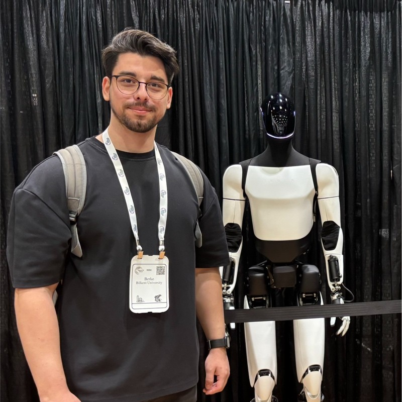
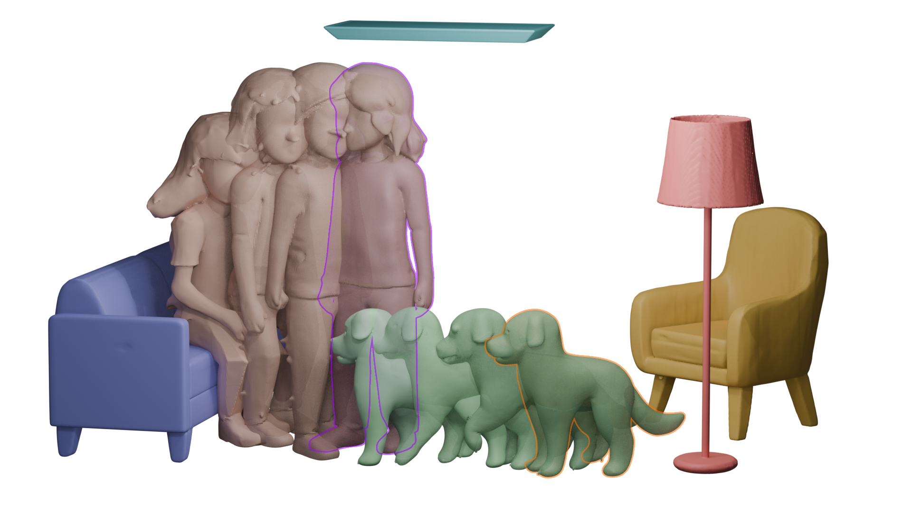
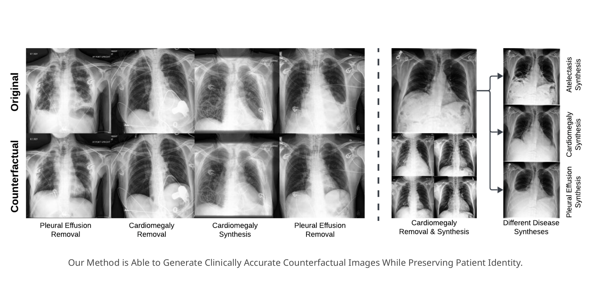
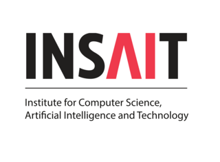
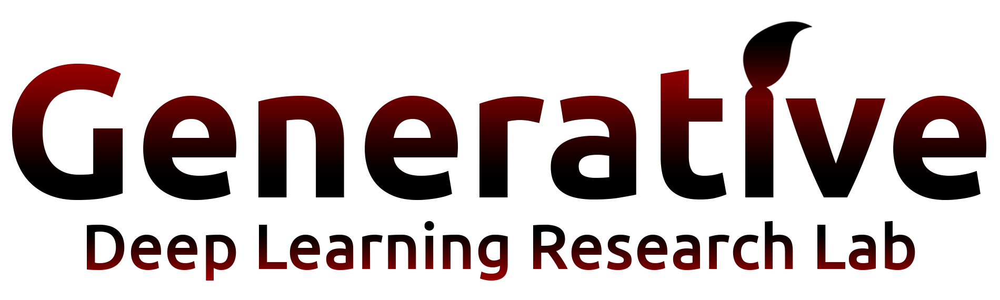
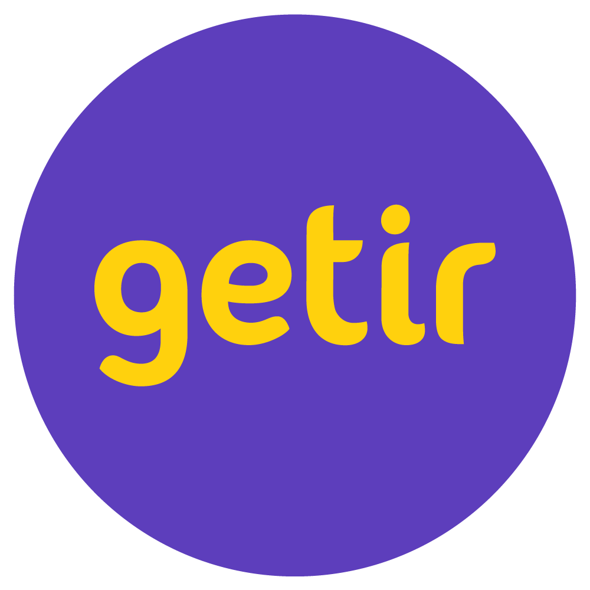
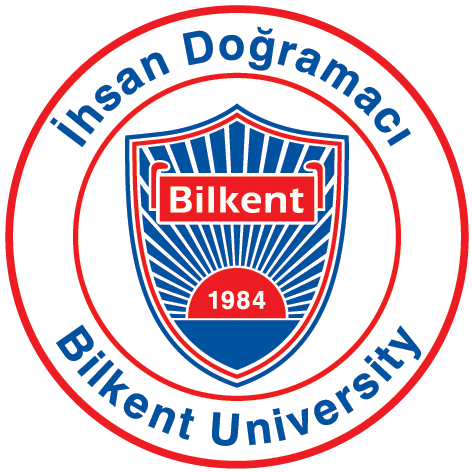
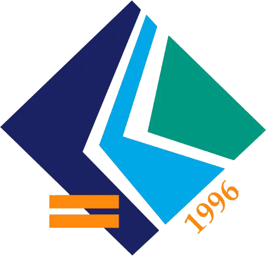
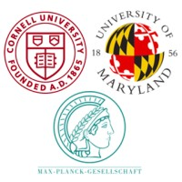

A. Berke Gökmen
Hi! I am an incoming PhD student at UC Berkeley EECS. Currently, I work as a Researcher at INSAIT.
Previously, I was a Research Intern at ETH Zürich CVL, and an Undergraduate Researcher at Bilkent University.
Email / Google Scholar / LinkedIn / GitHub / Map

News
- [2026.07] Heading to UC Berkeley EECS for my PhD!
- [2026.03] Our work COM4D is accepted to CVPR 2026! Check out the paper.
- [2025.12] Our work COM4D is on arXiv!
- [2025.09] Joined INSAIT as a Researcher in Sofia, Bulgaria.
- [2025.05] Our work RoPECraft is accepted to NeurIPS 2025!
- [2024.09] Our work Dual Encoder GAN Inversion is accepted to NeurIPS 2024!
- [2024.07] Started as a Research Intern at ETH Zürich Computer Vision Lab (CVL).
- [2024.01] Started as an Undergraduate Researcher at Bilkent University DLR.
Publications
-

-
-
-
-

Experience & Education
Roles
-

INSAIT — Researcher · Aug 2025 – Present · Sofia -
 ETH Zürich CVL — Research Intern · Jul 2024 – Nov 2024 · Zürich
ETH Zürich CVL — Research Intern · Jul 2024 – Nov 2024 · Zürich
-

Bilkent DLR — Undergraduate Researcher · Jan 2024 – Aug 2025 · Ankara -

Getir — Software Engineer · Sep 2022 – Jan 2024 · Istanbul
Education
-

Bilkent University — B.E. Computer Science · 2020 – 2025 · Ankara -
 EPFL — Exchange, Computer Science · 2023 – 2024 · Lausanne
EPFL — Exchange, Computer Science · 2023 – 2024 · Lausanne
-

Çanakkale Özel Fen Lisesi — Math & Science Diploma · Çanakkale
Short-term Schools
- MBZUAI Winter School on Generative AI and Representation Learning — Feb 2026 · Abu Dhabi
-

Cornell, Maryland, Max Planck Pre-doctoral Research School in Computer Science — Aug 2025 · Saarbrücken